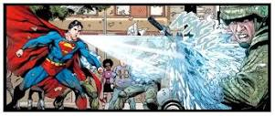

Heat Vision is a superpower possessed by Kryptonians and Daxamites when exposed to the yellow sun; see Photonucleic Effect. It is the ability to release massive amounts of solar energy stored within the body through the eyes, in focused beams of heat.
Super Strength is the ability amongst Kryptonians, Daxamites, and many other superbeings of having incredible strength. In the case of Kryptonians and Daxamites, it has been explained as a result of the planet Krypton having significantly greater gravity than Earth, leading its inhabitants to have significantly greater muscle mass. However, the Photonucleic Effect at the very least greatly increases this incredible strength. In some cases, it has been given as the explanation of this strength in general.
Super Breath: Superman's breath was capable of freezing objects and generating hurricane-force winds. His super breath can extinguish fires or freeze things. He could also hold his breath indefinitely, allowing him to travel underwater or in space without breathing apparatus.